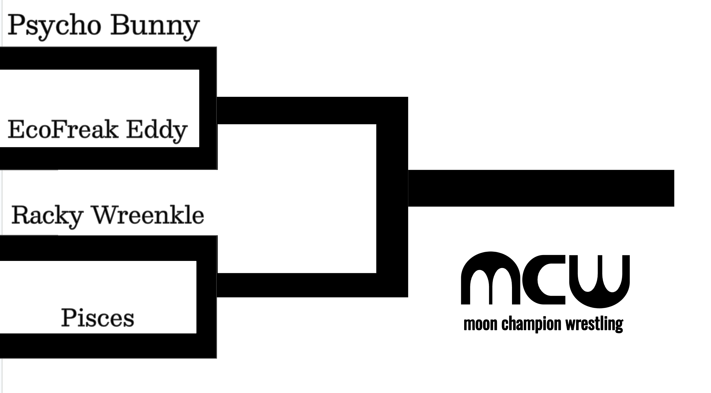

Penguin #35108 felt like something was wrong with him because he didn't care at all about the MCW semifinals. Everyone around him felt differently: they had a challenger for which they were rooting or a detested foe against whom they were jeering.
But he felt nothing.
There was a time when he felt pride in his work, deep in the mine, chipping away at the freshwater ice with his sterilized chisel. For all the northerners up north who needed an ice cold drink or didn't want to wait quite so long for their coffee to be a comfortable temperature. But now he felt nothing. Just this big blank feeling, as he swung the chisel and broke away tiny fragments of ice away from the whole. Just geometric shapes without artificially infused connotation. Just the universe doing universe things. Just that.
Maybe. Maybe if he drank more yeefass, he would feel something. Yes, that was it. Penguin #35108 went to the store and bought a seventeen-pack. He walked home, sat on the front porch, and started drinking fermented krill juice.
Tasted so nasty.
But he started feeling things. Incredible things. Instead of geometric shapes empty of connotation, he saw absurdity. Madness. Preposterousness. Ridiculous. All of it. So silly. So stupid. But mostly silly. Silly. So silly.